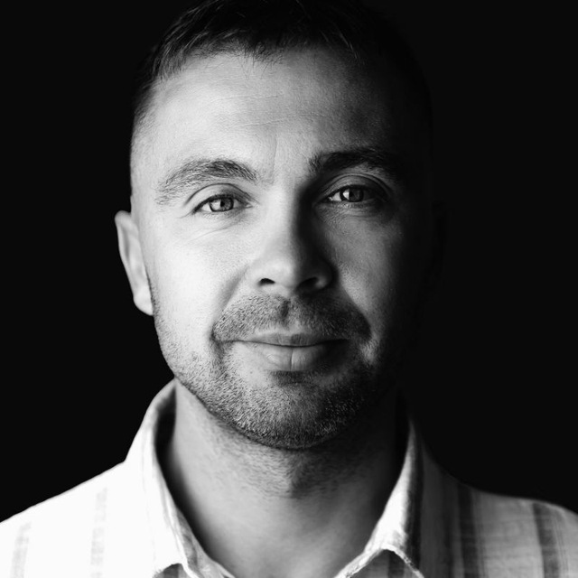
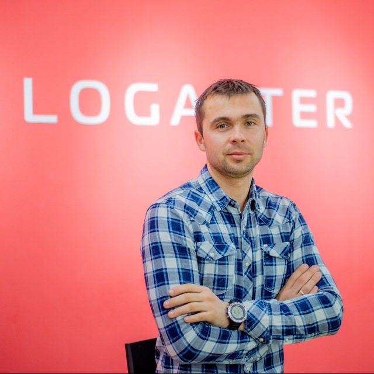
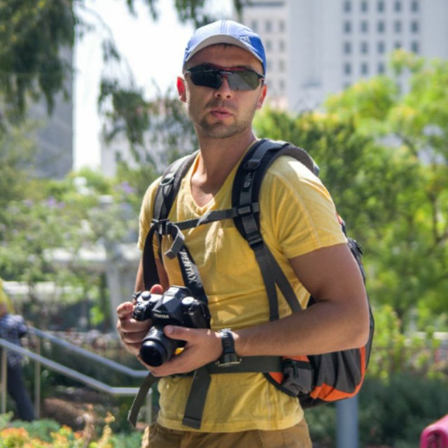
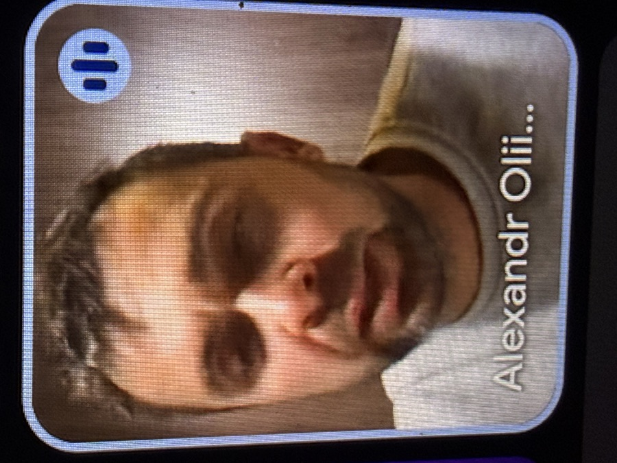

Рівень: космічний
Літав у космос, щоб перевірити, чи вимкнув праску
Праску вимкнув. Заодно полагодив Wi‑Fi на МКС, навчив астронавтів ліпити вареники і повернувся додому до вечері. NASA досі надсилає листівки на Різдво.
Людина. Легенда. Рятівник галактики і всього, що в ній муркоче.
Спокійний, як Карпати о шостій ранку. Сильний, як бабусин борщ. Вдумливий, як кіт перед стрибком на шафу.

Статистика неповна: більшість подвигів Саня робить тихо і нікому не розповідає. Ці ми дізнались від свідків.
врятованих людей (і ще 3 човни)
польоти в космос, один із них — щоб вимкнути праску
глибина, на яку він пірнув за загубленою шкарпеткою
коти, які офіційно вважають його татом
Усе, що нижче, — чиста правда. Ну, майже. Принаймні Саня ніколи це не заперечував (бо він скромний і взагалі не знає про цей сайт).
Праску вимкнув. Заодно полагодив Wi‑Fi на МКС, навчив астронавтів ліпити вареники і повернувся додому до вечері. NASA досі надсилає листівки на Різдво.
Шукав шкарпетку, яку загубив у 2014-му. Знайшов. Дорогою заспокоїв нервову рибу‑вудильника — тепер вона ходить до Сані на консультації і вже майже не кусається.
Витягнув із річки 47 людей, 3 човни й одного дуже здивованого бобра, який, як з'ясувалось, і не тонув. Бобер не образився і тепер пише Сані листи. Дерев'яні.
Кожен кіт отримує від Сані листівку на день народження. Навіть ті, що його подряпали. Особливо ті. Коти Європи одноголосно визнали його почесним котом — перша людина в історії.
Колесо з підігрівом, масаж щічок, огірочки на очі і групова медитація «Я не мушу нікуди бігти». Хом'ячок Валерій вперше за життя виспався і плакав від щастя.
Переговори тривали дев'ять годин. Саня просто спокійно сидів, пив чай і вдумливо мовчав. На десятій годині тхори не витримали — обійнялись і попросили вибачення. Навіть одне в одного.
Від поганого настрою. Показав, як сортує сміття: на 14 контейнерів — за кольором, матеріалом і настроєм. Грета вперше в житті посміхнулась і сказала: «How dare you be so good?»
Віддав останню шоколадку. Двічі. Одну й ту саму. Вчені досі не розуміють, як це працює, але підозрюють, що доброта Сані порушує закон збереження маси.
Одна людина — тисяча професій. Тут лише ті, у яких його встигли сфотографувати. Так, це справжні фото. Майже.
Скафандр одягнув із ввічливості, щоб інші космонавти не ніяковіли. Насправді в космосі він дихає спокоєм. Кіт полетів зі ним добровільно.
Робить уколи так ніжно, що пацієнти записуються ще раз — просто щоб поспілкуватись. Температуру міряє поглядом. Похибка — нуль.
Виписує штрафи тільки за одне порушення — замало посмішок. Окуляри носить, щоб порушники не розтанули від його доброго погляду. Котик — його напарник.
Гасить пожежі спокійним поглядом. Шланг носить, щоб колеги не ніяковіли. Кожного кота з дерева знімає особисто і проводить з ним бесіду про безпеку.
Леви приходять до нього на сеанси медитації, а жирафи — порадитись щодо життя (здалеку видно, але все одно незрозуміло). Він вислуховує всіх. Навіть гієн.
Вручає сертифікат на мільйон обіймів. Термін дії — безстроковий. Обійми не обмінюються і не повертаються, але передаються друзям.
Учені з усього світу намагались їх виміряти. Прилади не витримали.
Коли поруч вибухнув феєрверк, Саня сказав: «Гарно» — і продовжив пити чай. Говерла приїжджала до нього вчитись незворушності.
Заніс холодильник на дев'ятий поверх. Сам. Бо ліфт попросив вихідний, і Саня не зміг йому відмовити.
Одного разу задумався так глибоко, що Wi‑Fi у кімнаті почав ловити краще. Сусіди тепер просять його думати частіше.
Рідкісні кадри, які вдалося зробити, поки Саня не помітив. Папараці ризикували життям (ні, Саня ж спокійний).



Коротко, бо повна версія не влізла у три томи.
Народився і одразу заспокоїв усю пологову. Лікарі плакали від спокою.
Навчив сусідського пса команди «сидіти». Пес досі сидить. Чекає, поки Саня скаже «можна».
Виграв у шахи в комп'ютера. Комп'ютер попросив реванш, а потім — психолога.
Отримав посвідчення рятувальника. І ще одне — на випадок, якщо перше хтось захоче врятувати.
Злітав у космос, пірнув на дно океану, помирив тхорів. Усе — за один вівторок.
Скромно робить вигляд, що цього сайту не існує. Але ми знаємо: він натиснув «Посміхнути Саню».
Ми опитали всіх, кого він врятував. Опитування триває досі.
«Після нього я вперше відчула себе неглибокою».
«Він єдиний, хто мене не боїться. І єдиний, кого я поважаю».
«Мур».
«Вперше хтось запитав, як МОЇ справи».
«Я стою спокійно тисячі років, але Саня спокійніший. Заздрю».
«Чудова людина. Одна зірка знята, бо витяг мене, коли я не тонув».
Не стримуйся. Натисни кнопку. Саня відчує — і спокійно, сильно, вдумливо посміхнеться.